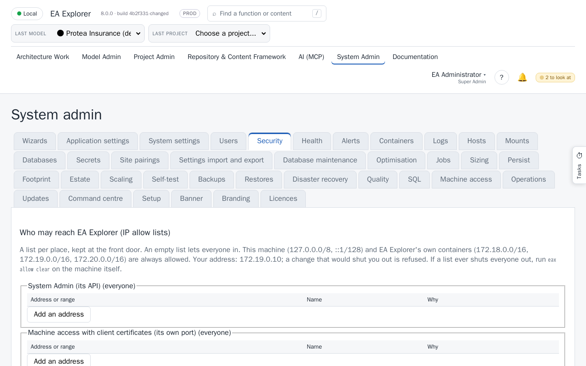

Turn on multi-factor sign-in
For: System Admin
Ask admins, or everyone, for a one-time code from an authenticator app when they sign in.

#/admin/securityWhy do this
Multi-factor sign-in asks for a code from an authenticator as well as the password. Turning it on for admins, or everyone, protects the repository against the most common attacks. See Roles and access.
Security in EA Explorer is a set of layers: who can reach it, how they prove who they are, what their roles allow, and secrets no one can read. Each layer is set on the screens, and nothing here ever shows a secret's value.
In TOGAF terms: Outside the method: this protects the repository and who reaches it. See EA Explorer and the TOGAF Standard.
The goal: A stolen password is not enough to get in.
Before you start You need the Super Admin or IT Admin role. People need an authenticator app on their phone.
Steps
- Open System Admin › Security.
- Under Multi-factor sign-in, choose Admins (the Super Admins and IT Admins) or Everyone. Off is the default.
- Save. It applies at once: the people it covers set up their authenticator at their next sign-in.
Check it worked
Sign out and in: after the password, EA Explorer asks for the code (the first time, it shows a QR code to scan).
If something goes wrong
- Someone lost their phone: on System Admin › Security, reset their authenticator; they set up a new one at the next sign-in. An administrator locked out can be helped from the machine:
eax access mfa-off <user name>.